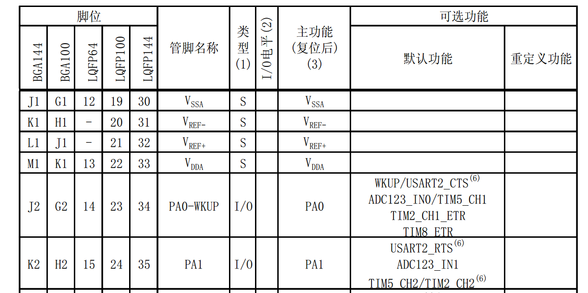
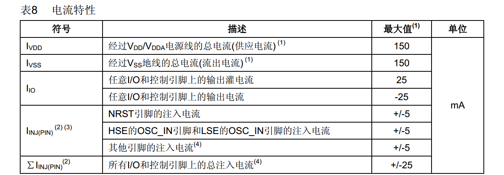
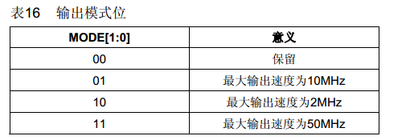
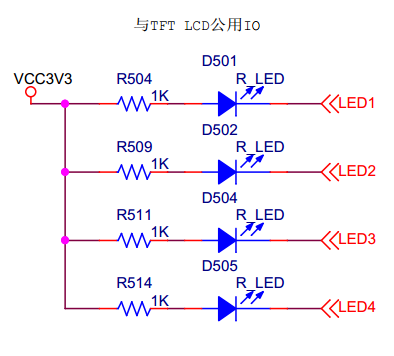

5. IO&点亮LED¶
5.1. 概述¶
芯片如何控制外部电路？
从本课开始，让我们一点一点把单片机系统的知识框架搭建起来。
本课，学习最简单的、也是最基本的：IO口。
本课讲以下几个问题：
IO是什么？
STM32的IO有什么特点。
LED如何使用？
编码和调试过程（这段看视频更好）
5.2. IO 是什么？¶
IO是Input&Output，也就是输入和输出。
我们选的STM32103这款芯片的，管脚总共有100根。
但是《STM32F103数据手册.pdf》中有写：IO口只有88，为什么？

在数据手册的第14页有管脚定义图，如下：

从管脚名称看到，名称是P前缀的的管脚， 就是IO口。100脚的STM32，有PA、PB、PC、PD、PE，一共5组
除了IO，还有电源和地、晶振输入、BOOT配置等其他功能的管脚。
普通电源有5组。
模拟电源有1组。
备份电源一组。
参考电压VREF有一组。
复位脚和启动配置BOOT0各一根管脚。
晶振两组，其中RTC晶振可做普通IO使用。
73脚是空的，没有连接。
有些朋友可能有疑问，怎么都没看到SPI、I2C等功能的管脚？
通常IO口都能复用作其他功能、比如SPI，I2C等。在数据手册的管脚定义中有几页说明管脚可以复用做什么功能。
比如：

PA0，主功能时PA0，可用作串口的CTS，ADC，TIM6，TIM2，TIM8等功能。
具体功能后面我们会学到。
从此可见，我们说IO功能，通常只是一个IO口的基本功能：GPIO， 通用输入输出的意思。
那GPIO是用来做什么的呢？
5.2.1. GPIO功能¶
那GPIO到底能用来做什么呢？
理解这个GPIO之前，先要定下一个概念：
除了DA转换和AD转换， 其他的IO口都是数字逻辑功能
那对GPIO来说，功能很简单，分两个：
输出-在管脚上输出数字逻辑电平。
输入-检测管脚的逻辑电平
芯片用的是TTL电平：
数字电平有两种，高电平和低电平。
高电平是逻辑1，低电平是逻辑0.
高电平通常是芯片工作电压，低电平是就地电压。
实际上呢，高电平和低电平是有一个范围的，并不仅仅是3.3V和0V
5.2.2. GPIO驱动能力¶
一个IO口输出电流或输入电流的能力。
在中文版数据手册 第31页中，有下面这个表格：

灌电流和拉电流都是25mA
在设计外围电路时，电流不能超过这个值，否则会烧芯片。比如大电流的LCD背光，就需要在外部添加三极管驱动电路。
还有一个需要注意的，有些芯片，灌电流和拉电流的最大值不一样，灌电流可能只有5ma。
5.3. STM32 IO特点¶
以前8051单片机非常简单，只要设置IO口的方向是输出还是输入，就可以工作了。
这样用起来虽然简单，但是却无法满足各种应用场景。
因此，高级一点的芯片，IO口通常有很多功能可以配置。
STM32的GPIO就是这样，如果操作寄存器操作的话，相当复杂。在《STM32F10x微控制器参考手册.pdf》中，第七章就是讲GPIO功能的。

首先要知道，IO口有8种模式：

这里要区分输入和输出：浮空、上拉、下拉，都是说输入。推挽、开漏，是输出。
我们驱动LED，用的是输出功能。那选推挽还是开漏模式呢？那就要先搞清楚推挽和开漏输出的区别。
| 推挽 | 开漏 | |
|---|---|---|
| 高电平驱动能力 | 强 | 外部上拉电阻提供 |
| 低电平驱动能力 | 强 | 强 |
| 电平转换速度 | 快 | 外部上拉电阻决定，电阻越小，反应越快，功耗越大 |
| 线与功能 | 不支持 | 支持 |
| 电平转换 | 不支持 | 支持 |
开漏模式，IO口内部没有上拉，没有接MOS管，所以开漏电路不能输出高电平，要输出高电平，需要外部接上拉电阻，如果外部上拉电阻接的电压不是芯片电压，就相当于实现了IO口电平转换功能。
比如，推挽模式下，IO口输出过电平就是3.3V，用开漏模式，外部接电阻上拉到5V，那么输出高电平就是5V。
电平转换速度是说芯片0/1切换的速度。
线与，通常用在一些可挂载多设备的总线上，比如I2C。
因此，用驱动LED，用推挽还是开漏？除了必须用开漏的场合，我们都习惯用推挽输出
第二，要知道SMT32的IO有一个速度需要配置。

如果不知道如何选，全部用50M，功能肯定正常。但是可能会增加电流，增加EMC辐射。
经验：
普通功能的IO，通常2M就可以了。
如果一个IO用作I2C通信，速度通常就10K到400K，选10M就好了。
如果是用作SPI功能，可能会到20M速度，那就要选50M了。
到此，我们基本了解了STM32 GPIO的功能。下面看看ST的库都提供了什么函数给我们用。
5.4. ST库函数¶
打开我们上一节我们创建的工程。在库函数中找到stm32f10x_gpio.c和stm32f10x_gpio.h
函数有下面这些
void GPIO_DeInit(GPIO_TypeDef* GPIOx);
void GPIO_AFIODeInit(void);
void GPIO_Init(GPIO_TypeDef* GPIOx, GPIO_InitTypeDef* GPIO_InitStruct);
void GPIO_StructInit(GPIO_InitTypeDef* GPIO_InitStruct);
uint8_t GPIO_ReadInputDataBit(GPIO_TypeDef* GPIOx, uint16_t GPIO_Pin);
uint16_t GPIO_ReadInputData(GPIO_TypeDef* GPIOx);
uint8_t GPIO_ReadOutputDataBit(GPIO_TypeDef* GPIOx, uint16_t GPIO_Pin);
uint16_t GPIO_ReadOutputData(GPIO_TypeDef* GPIOx);
void GPIO_SetBits(GPIO_TypeDef* GPIOx, uint16_t GPIO_Pin);
void GPIO_ResetBits(GPIO_TypeDef* GPIOx, uint16_t GPIO_Pin);
void GPIO_WriteBit(GPIO_TypeDef* GPIOx, uint16_t GPIO_Pin, BitAction BitVal);
void GPIO_Write(GPIO_TypeDef* GPIOx, uint16_t PortVal);
void GPIO_PinLockConfig(GPIO_TypeDef* GPIOx, uint16_t GPIO_Pin);
void GPIO_EventOutputConfig(uint8_t GPIO_PortSource, uint8_t GPIO_PinSource);
void GPIO_EventOutputCmd(FunctionalState NewState);
void GPIO_PinRemapConfig(uint32_t GPIO_Remap, FunctionalState NewState);
void GPIO_EXTILineConfig(uint8_t GPIO_PortSource, uint8_t GPIO_PinSource);
void GPIO_ETH_MediaInterfaceConfig(uint32_t GPIO_ETH_MediaInterface);
GPIO_Init：初始化IO口，
GPIO_SetBits：IO口输出1
GPIO_ResetBits：IO口输出0
GPIO_WriteBit：IO口输出状态，相当于GPIO_SetBits和GPIO_ResetBits组合。
GPIO_Write：输出IO口状态，和GPIO_WriteBit的区别是什么呢？GPIO_WriteBit是在指定的IO口上输出相同的状态，GPIO_Write是在一组IO上输出需要的状态。
我们看参数：
GPIO_SetBits(GPIO_TypeDef* GPIOx, uint16_t GPIO_Pin);
将GPIOx这组IO口中，GPIO_Pin指定的IO口，输出高电平。
GPIO_ResetBits功能和GPIO_SetBits相反。
GPIO_WriteBit(GPIO_TypeDef* GPIOx, uint16_t GPIO_Pin, BitAction BitVal);
将GPIOx这组IO口中GPIO_Pin指定的IO口设置为BitVal的状态。
GPIO_Write(GPIO_TypeDef* GPIOx, uint16_t PortVal);
将GPIOx这组IO口设置为PortVal的状态。注意，是一次设置一组IO。
我们在来看看初始化的接口
void GPIO_Init(GPIO_TypeDef* GPIOx, GPIO_InitTypeDef* GPIO_InitStruct)
关键是第二个参数，这是一个结构体，定义如下：
typedef struct
{
uint16_t GPIO_Pin; /*!< Specifies the GPIO pins to be configured.
This parameter can be any value of @ref GPIO_pins_define */
GPIOSpeed_TypeDef GPIO_Speed; /*!< Specifies the speed for the selected pins.
This parameter can be a value of @ref GPIOSpeed_TypeDef */
GPIOMode_TypeDef GPIO_Mode; /*!< Specifies the operating mode for the selected pins.
This parameter can be a value of @ref GPIOMode_TypeDef */
}GPIO_InitTypeDef;
第1个参数GPIO_Pin指定要配置的IO口。
第2个参数GPIO_Speed配置IO口速度。
第3个参数GPIO_Mode配置IO口模式。
其中GPIO_Speed和GPIO_Mode类型是枚举，如下：
速度
typedef enum
{
GPIO_Speed_10MHz = 1,
GPIO_Speed_2MHz,
GPIO_Speed_50MHz
}GPIOSpeed_TypeDef;
模式
typedef enum
{ GPIO_Mode_AIN = 0x0,
GPIO_Mode_IN_FLOATING = 0x04,
GPIO_Mode_IPD = 0x28,
GPIO_Mode_IPU = 0x48,
GPIO_Mode_Out_OD = 0x14,
GPIO_Mode_Out_PP = 0x10,
GPIO_Mode_AF_OD = 0x1C,
GPIO_Mode_AF_PP = 0x18
}GPIOMode_TypeDef;
配置IO的时候，选用这里的定义即可。
我们看下例程，在目录STM32F10x_StdPeriph_Lib_V3.5.0\Project\STM32F10x_StdPeriph_Examples\GPIO\IOToggle
中的main函数，初始化IO口的代码如下：
int main(void)
{
/*!< At this stage the microcontroller clock setting is already configured,
this is done through SystemInit() function which is called from startup
file (startup_stm32f10x_xx.s) before to branch to application main.
To reconfigure the default setting of SystemInit() function, refer to
system_stm32f10x.c file
*/
/* GPIOD Periph clock enable */
RCC_APB2PeriphClockCmd(RCC_APB2Periph_GPIOD, ENABLE);
/* Configure PD0 and PD2 in output pushpull mode */
GPIO_InitStructure.GPIO_Pin = GPIO_Pin_0 | GPIO_Pin_2;
GPIO_InitStructure.GPIO_Speed = GPIO_Speed_50MHz;
GPIO_InitStructure.GPIO_Mode = GPIO_Mode_Out_PP;
GPIO_Init(GPIOD, &GPIO_InitStructure);
调用RCC_APB2PeriphClockCmd函数打开GPIOD时钟。
这个是需要注意的，ST的芯片每个设备都有时钟，使用之前都需要打开。
GPIO_Pin设置为GPIO_Pin_0 | GPIO_Pin_2， 说明过一次配置两个IO口。
速度配置为GPIO_Speed_50MHz， 也就是50M
GPIO_Mode设置为GPIO_Mode_Out_PP， 也就是输出推挽模式。
调用函数GPIO_Init进行配置。
5.5. 如何使用LED¶
LED是什么？
发光二极管简称为LED。因化学性质又分有机发光二极管OLED和无机发光二极管LED。
它本质上是一个二极管。所以就有正负极。
加上电压就会亮，但是，LED其实是一个电流器件，有电流了才会亮。
电流越大，亮度越大，但是不能超过规格。
在资料文件夹内有一个发光二极管的规格书。LED的规格书中有一个很重要的参数。 《黄绿 0603 (33_40mcd)_PDF_C2289_2015-07-23.pdf》

第1行，顺向电流，就是LED的工作电流，不能超过20mA
LED电路原理图如下：

一共4个LED，正极通过一个限流电阻接到VCC3V3，也就是高电平。负极接到IO口。
当IO口输出低电平，LED就会发光。
限流电阻就是防止流过LED的电流大于它的顺向电流最大值。
电流的计算可以粗略如下：
I=（3.3-0.6）/1K = 2.7mA
这个电路的接法，电流是流入IO口的，就是灌电流。
5.6. 编码与调试¶
请看视频，文档待补充
对原理图 找到对应的IO, PE15 PD8 PD9 PD10
拷贝例程初始化代码，修改为我们的IO口。
单步运行，发现 还没设置IO口，只是初始化 就亮了， 为什么？
修改，先设置输入输出的值，再初始化IO口。
写流水灯，无延时， 单步运行，流水灯功能正常。全速，没有出现流水，但是亮度变暗了。为什么？
讲程序，简一点C语言的编码知识。
十进制 十六进制的数值定义。
加延时 关键字 volatile
C 语言知识点: 宏定义